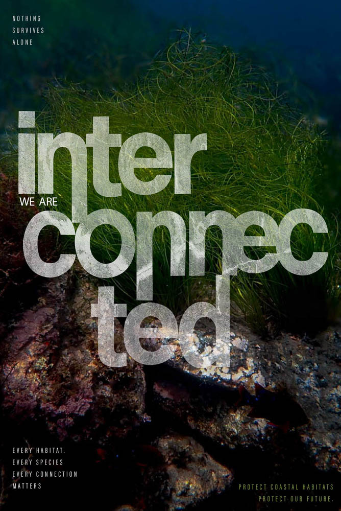
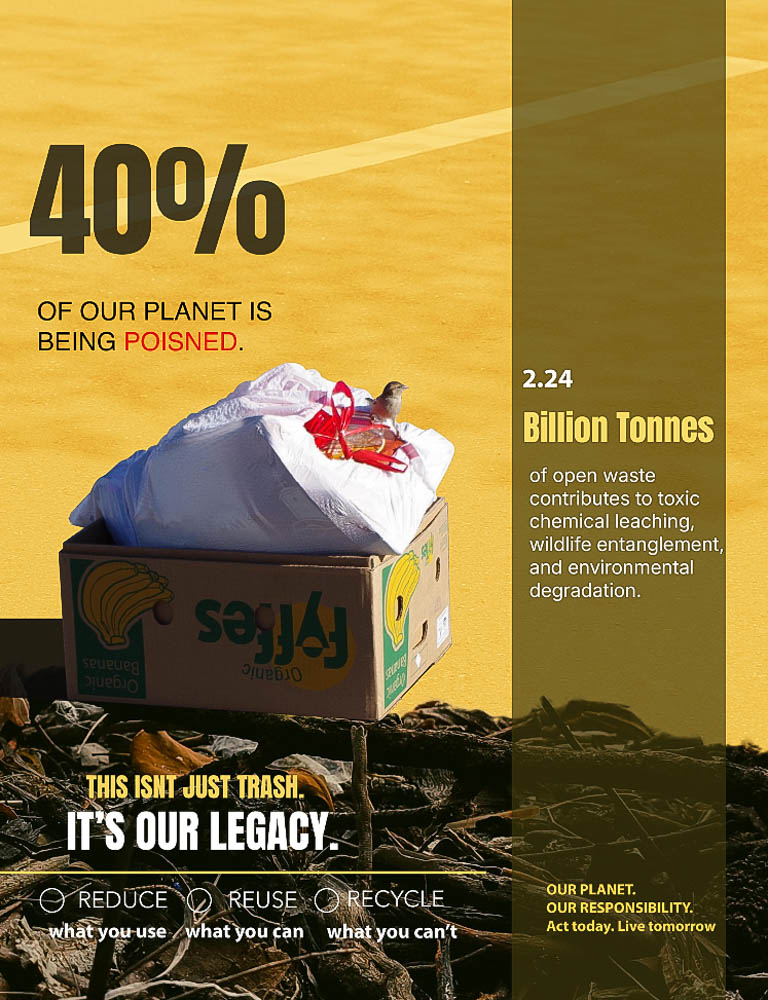

A conceptual environmental design project about consumerism.
Future For Sale explores how everyday products reveal larger
environmental issues connected to waste, fossil fuels, and consumer
culture. Through conceptual design and visual storytelling, the project
encourages viewers to reflect on the long-term consequences of modern
consumption.
Dream Then Rebuild
A typography project centered on rebuilding and resilience.
This typography project focuses on themes of rebuilding and
resilience using structured, layered design elements.
Bloom
A digital artwork about grief, healing, and personal growth.
Bloom reflects life after experiencing death and grief. The piece
represents healing, growth, and becoming myself again after loss.
Ocean Conservation

A conservation-focused project inspired by marine ecosystems.
Ocean Conservation explores the relationship between people and marine
ecosystems through photography, typography, and environmental
storytelling. The project highlights the importance of protecting ocean
habitats and preserving biodiversity.
After Consumption

A conceptual project examining the impact of consumer culture.
After Consumption examines what remains after products are used and
discarded. Through visual communication and environmental themes, the
project encourages reflection on waste, overconsumption, and the lasting
effects of human behavior on the environment.
Portrait Painting
Portrait painting exploring realism and emotional depth.
This project explores realism and emotional expression through portrait
painting techniques, careful observation, and personal storytelling.